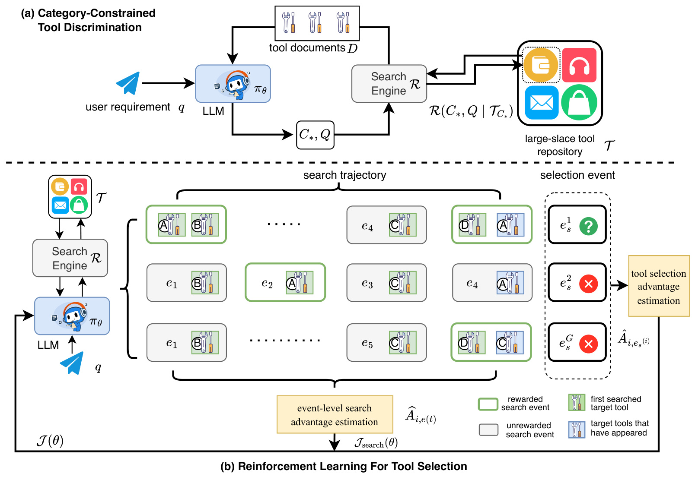
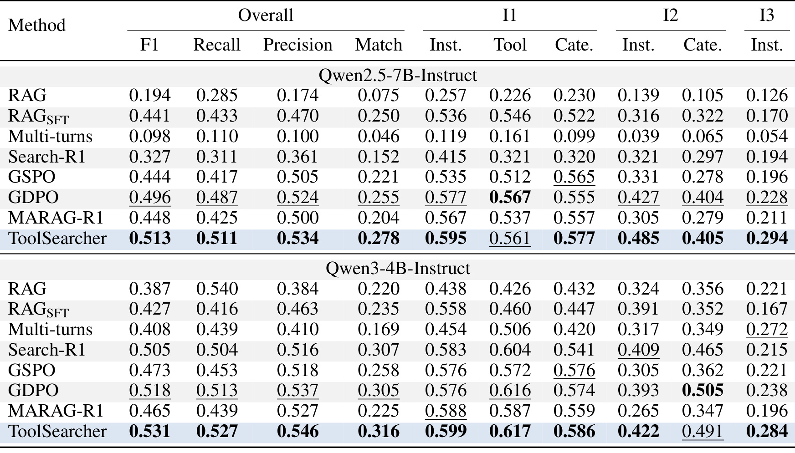
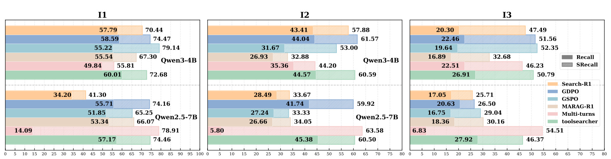
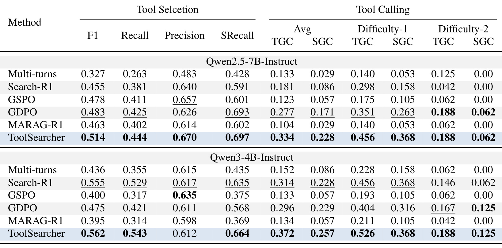
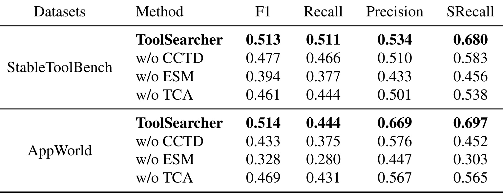
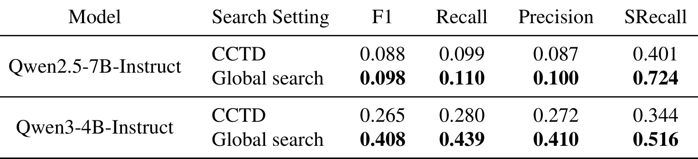
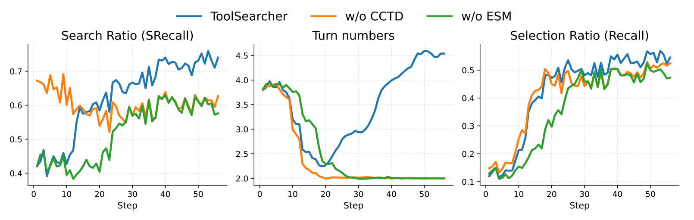

ToolSearcher：用事件级强化学习训练大规模工具选择
ToolSearcher: Optimizing Tool Selection at Scale via Reinforcement Learning 研究智能体怎样从大型工具库逐轮找到并选出可用的工具集合。作者为 Zhenlong Dai、Xujie Song、Zitong Wang、Tong Niu、Jian Liu、Weiqiang Wang、Xiu Tang、Sai Wu、Chang Yao、Jingyuan Chen；一作来自浙江大学，合作机构为蚂蚁集团。论文于 2026 年 9 月 25 日首次公开，作者标注已被 NeurIPS 2026 接收。论文入口；官方代码已核验可访问，包含训练、推理和评测目录。以下依据完整 29 页原文及附录，核验日期为 2026 年 9 月 29 日。
真实工具库规模庞大、功能多样，模型无法把全部文档放进上下文，也难以区分语义相近但接口不同的工具。现有面向知识问答的强化学习没有显式优化工具组合搜索，而整条轨迹共享的稀疏奖励又难以分别教会模型搜索、辨别和最终选择。
1. 背景和问题
工具智能体常被理解成能够生成函数调用的语言模型，但“调用格式正确”和“选择了正确函数”是两件事。原文把完整过程分为工具选择、工具调用、答案生成三个阶段。后两者能否成功，首先取决于前一阶段是否交付了足够、相关且可以组合的接口。一个模型即使熟悉 JSON 格式，也可能因为没找到上游数据查询接口，或者选中了输出字段不匹配的近似工具，让后续代码在执行时失败。本文把研究重心放在这个前置环节：用户只给自然语言需求，系统有一个大型工具库及文档搜索引擎，模型必须逐轮检索工具文档，最后输出一组 API 名称。论文并没有提出新的参数生成器，也没有把整个应用执行闭环都训练进同一个策略。
这一设定与常见的小工具集合调用有本质区别。当工具数量少时，可以直接把所有函数定义塞入提示，模型主要承担候选间判别；当仓库含有数万工具时，完整文档超过上下文预算，候选集合本身也必须通过模型行动逐步形成。初次查询往往只能找到需求的一部分实现方式，随后模型需要根据返回接口重新考虑计划，并为缺失步骤生成下一次查询。假设一个任务先要检索某类对象，再基于对象标识获取详情，名字相近的详情接口也许要求另一种标识；这时前一步的检索结果必须反过来影响第二步的选择。这个例子用于说明接口依赖，不是论文另外报告的实验案例。
大规模工具库还把两种相似性问题叠在了一起：有些文档语义接近，但实际功能不同；有些工具功能相近，但输入限制和返回结构不同。只使用文本相关性排序，可能把“看起来谈同一件事”的工具推到前面，却无法保证它们能组成需求所需的链条。反过来，完全依赖模型内记忆也不可靠，因为工具名称、版本、字段定义以及可用集合都会变化。本文要求最终工具名以检索结果为依据，这使搜索成为可检验的信息获取过程，而不是让模型凭熟悉程度猜测 API。训练奖励同样利用已知目标工具集合核对哪些文档真正被找到，因此这里的监督来自集合覆盖与选择结果，并非一个开放式语言裁判对规划文本打分。
已有检索增强生成路线通常采取一次检索后生成的方式。扩大单次返回数量可以提高目标工具覆盖，却会同时增加无关候选、近似接口和文档长度。论文将这种路线作为 RAG 与经过监督微调的 RAGSFT 基线，并给它们使用前一百条检索结果；多轮路线每轮只返回五条，再让模型自行决定下一轮搜索。两者承担的上下文组织任务不同，因此不能把性能差距简单解释成“多轮一定比单轮强”。后文主结果中，未经训练的多轮 Qwen2.5 模型甚至明显弱于单次 RAG，恰好说明拥有搜索接口并不会自动获得工具辨别能力。工具选择的瓶颈可能在检索覆盖，也可能在读完文档后的决策，需要把这两者拆开测量。
面向知识问答的智能体强化学习已经可以交替生成推理与查询，但它们常以最终答案质量给整条轨迹统一奖励。这种做法在工具集合任务里会造成两个不清楚的责任归属。其一，一条失败轨迹可能已找到几个正确工具，只差最后一个；把所有查询一起惩罚，会丢掉有用的局部搜索行为。其二，另一条轨迹可能已经收集齐全部所需文档，只是最后输出集合时遗漏或混入错误 API；继续强化它的搜索步骤并不能直接补足最终辨别能力。相同的失败结果，背后的学习阶段不同。ToolSearcher 的核心假设是，训练应该先识别每条轨迹推进到了哪里，再对仍未掌握的行为分配信号。
这种分解也解释了为何作者不只把搜索召回奖励与最终匹配奖励相加。整体搜索召回是一个集合比例：两条轨迹可能找到同样数量的目标工具，却分别发现完全不同的工具，其中一个目标几乎所有轨迹都会找到，另一个则很难被发现。若仅看比例，它们无法区分。本文为每个目标工具跨同一问题的多条采样轨迹计算相对优势，再把信号归给首次找到该工具的搜索事件。这样奖励绑定了“发现了哪个目标、在哪一步首次发现、其他轨迹是否已经会找”，粒度比整条轨迹的总分更细。其适用前提也随之明确：训练数据必须知道目标工具身份，检索返回结果必须能映射到稳定的工具标识。
最后还要区分“考虑可组合性”和“显式验证可执行性”。本文让模型读取功能、输入和输出文档，通过多轮搜索调整计划，并在标注目标工具集合上训练；方法中没有新增类型检查器、真实工具链执行器或状态转移证明器。工具是否能组合，主要通过训练任务及目标集合间接体现。AppWorld 的下游执行实验用于检验这种能力迁移是否带来实际帮助，但执行由另一个固定智能体承担。因而本文最值得学习的是对信息发现与选择责任的分解，而非把它当成已经解决可靠工具调用、安全授权或状态管理的一体化方案。
评价设计也需要承认任务定义带来的取舍。最终工具集合的完全匹配奖励很清楚，能够自动计算，也比凭语言裁判给规划过程打分更容易复核；但它会把少选一个必要接口和多选一个备选接口都归入失败。搜索召回则只关心目标是否曾被返回，不衡量文档是否完整、模型是否正确理解参数限制。因此本文同时报告多个集合指标，并用另一个应用环境考察下游完成情况，才有可能避免只优化某个代理分数。阅读时应保留从文档可见性到集合准确性、再到实际执行的层次，任何一层的改善都不能自动替代下一层的验证。
2. 方法
2.1 任务接口与类别约束辨别
原文用工具文档描述功能、输入约束和输出结构；给定用户需求、工具库和搜索引擎，策略最终预测满足需求的工具集合。搜索通过结构化调用执行，外部结果作为下一轮上下文返回。类别约束工具辨别，即 CCTD，把工具库依功能分组，让训练初期在高度相似的候选子空间里搜索。原文式（1）为：
符号解释：$D$ 是检索返回的工具文档集合，$\mathcal R$ 是搜索引擎，$C^*$ 是所选类别，$Q$ 是语义查询，$\mathcal T_{C^*}$ 是该类别对应的工具子集。这个约束改变搜索环境，而不是为最终答案增加一个分类损失。训练数据的前百分之三十采用类别搜索，此后恢复全库检索；论文实施中对应前十七步与总计五十六步。先在近似接口中学习辨别，再学习全局细粒度语义查询，是这里的课程安排。它依赖已有类别标签，也可能遇到类别划分错误或跨类别需求，因此不能把类别约束固定成部署时永久过滤器。

Figure 1 上半部分从左侧用户需求进入策略模型开始，模型给出类别和查询，搜索引擎到右侧工具库检索，再把顶部文档集合回传给模型。返回箭头表示模型是在读取工具内容后继续规划，并非一次性对全部工具分类。下半部分把同一需求的多条采样轨迹并排展示，每一行由若干搜索事件和一个最终选择事件组成。字母代表目标工具，绿色小块表示这条轨迹首次看到该目标，蓝色表示此前已出现过的目标；两种颜色表达的是信息新颖性，不能理解成工具本身的静态好坏。绿色事件外框对应得到搜索优势的步骤，灰色外框对应没有分配该项奖励的步骤。重复搜到同一个目标不会不断累积奖励，因此模型不能仅通过反复命中容易工具来掩盖未找到的关键接口。
图中还特意区分“首次出现”和“值得继续强化”。例如某个目标虽然在一条轨迹中第一次出现，但若组内所有轨迹都已经能找到它，它也不再提供有差异的学习信号。底部的事件优势估计聚合到搜索目标，右侧的选择优势估计则对应最终集合。某行尚未收集齐目标工具时，右侧选择位置显示问号，表示此阶段不应用最终选择信号逼模型猜测不可见工具；已经有足够信息却输出错误集合的轨迹，才是选择训练需要重点纠正的对象。底部大回路把两类目标合回同一策略更新，而非维护两个互不相关的模型。理解这张图时，应沿着需求、查询、返回文档、首次发现、最终集合、优势更新的顺序阅读；它展示的是训练信用分配，不代表这些绿色标记能在没有真值的线上环境中直接计算。
2.2 将首次发现变成可训练的搜索事件
搜索事件只奖励首次发现的目标，并把奖励定位到产生这次搜索的模型行动。 每一次搜索事件由策略发出的动作和搜索引擎返回集合组成。训练只对模型生成的 token 计算策略梯度，检索文档 token 被掩码，以避免把外部文档文字当成模型自身行动来优化。接着原文式（2）确定每个事件新发现的目标集合：
符号解释：$e_j$ 是第 $j$ 个搜索事件，$M(e_j)$ 是该次返回的工具集合，$T_s$ 是训练样本的目标工具集合，$E_{<j}$ 表示更早的事件，$M(E_{<j})$ 是此前累计见到的工具，$k$ 是搜索事件总数，$E^*$ 是至少首次发现一个目标的事件集合。差集先移除已覆盖目标，再取交集，因此同一工具不会在一条轨迹中被重复计为新发现。这个定义也意味着搜索到有潜在用途但不在标注集合里的工具不会获得此奖励；对于具有多种等价解法的真实任务，真值集合不完备会带来假负例。
式（3）用一个概念性目标表达只提高关键发现事件的概率：
符号解释：$\pi_\theta$ 是参数为 $\theta$ 的策略，$S$ 是搜索轨迹，$P_\theta$ 是给定历史后的事件概率，$\mathbb 1$ 为指示函数，$\mathbb E$ 表示对采样轨迹取期望。非关键事件的指数为零，因此不进入这个发现概率乘积。实际训练并不直接对这个长乘积求导，而是使用原文式（4）的裁剪策略优化形式，将事件级优势赋给事件内部生成 token：
符号解释：$G$ 是同一需求的采样轨迹数，$S_i$ 是第 $i$ 条搜索轨迹，$|S_i|$ 用于长度归一，$t$ 索引生成 token，$e(t)$ 表示该 token 所属事件，$w_{i,t}$ 为新旧策略概率比，$\widehat A$ 是事件优势；$\epsilon$ 限制单次更新幅度，$\beta$ 为参考策略 KL 正则系数，$\pi_{\mathrm{ref}}$ 是参考模型。求和的行动项不包含检索返回文字。裁剪与 KL 保留了常见相对策略优化的稳定机制，论文创新主要在优势如何定位，而不是放弃已有优化器。
原文式（5）将概率比与优势定义为：
符号解释：$q$ 是用户需求，$\theta_{\mathrm{old}}$ 是采样旧策略参数，$S_{i,<t}$ 是当前位置之前的上下文；$r(T,S_i)$ 是二元指示值，表示整条轨迹是否找到工具 $T$。均值与标准差沿同一问题的 $G$ 条轨迹计算，最大值沿当前事件首次发现的目标集合计算。选择最大优势意味着同一搜索同时找到多个工具时，最有辨识度的目标主导该事件信号；这不是对工具数量求和，因此一次返回更多目标不必然获得线性更大奖励。组内人人都会发现的目标被视为已掌握，不再强化；零方差必须按这一规则处理，不能直接执行除零。相反，若所有轨迹都找不到某工具，也没有成功事件可以强化，这是探索覆盖的实际边界。附录梯度分析说明事件系数如何影响梯度，但没有证明在任意工具库上都能收敛到最优搜索策略。
2.3 按轨迹进度分配选择信用
轨迹对齐信用分配，即 TCA，把搜索与最终选择两个阶段合并训练，但不让所有轨迹无条件接收同一种奖励。用 $\rho_{i,t}$ 表示最终选择 token 的新旧策略概率比，原文式（6）可整理为：
符号解释：$e_s^{(i)}$ 是第 $i$ 条轨迹的最终选择事件，$e_{s,t}^{(i)}$ 是其中一个生成 token，$\widehat A_{i,s}$ 是选择优势；其余裁剪参数沿用搜索目标。这一写法保留原文搜索项加选择项的结构，并把原文较长的概率比记为 $\rho$，没有额外引入新的损失权重。决定哪些轨迹能学习选择能力的是式（7）：
符号解释：$r_s$ 是最终所选集合与目标集合完全一致时为一、否则为零的选择奖励；$M(S_i)$ 为该轨迹累计搜索到的工具。这里把原文组内统计式中混用的样本下标按组归一化含义统一为 $j$，不改变其门控条件。只有搜齐目标的轨迹才获得选择优势，没搜齐时不鼓励模型通过记忆或猜测输出尚未见过的 API。搜索侧则移除组内已掌握目标对应的优势，把更新预算留给较难的发现。此处“移除奖励”针对任务优势，不等于整个模型完全没有 KL 正则或其他 token 的更新。
这种设计更像按学习进度路由监督，而非一个额外的规划模块。推理时并不知道目标集合，不能计算训练用的门控，模型只根据需求与已见文档继续搜索或结束。方法的效果因此来自训练后策略行为的变化。其代价是需要多条 rollout、准确工具标签与稳定检索接口；当目标包含训练数据没有覆盖的状态操作或罕见依赖，门控会使大量轨迹仍停留在搜索学习阶段，最终选择缺乏有效样本。这也是后面困难任务结果提升有限时需要考虑的解释。
3. 实验结果
3.1 数据、比较条件与域内主结果
StableToolBench 的工具库包含约一万六千个 API、四十九个类别；测试共七百六十五个样本，按单工具指令 I1、类别内多工具指令 I2、集合内多工具指令 I3 划分，并评估未见指令、工具和类别。训练数据由原有数据筛选得到一万四千四百一十八条，其中 I1 为一万一千三百二十九条，I2 为两千二百五十三条，I3 为八百三十六条；平均所需 API 数为二点一八，最多五个。附录 Table 6 给出了这组统计。训练集明显偏向 I1，而且“单工具”场景标签不意味着只调用一个 API，同一工具服务下可以包含多个接口。理解这个区分才能正确解释训练均值与场景名称。
基线包括一次检索的 RAG、监督微调的 RAGSFT、未经训练的多轮搜索，以及 Search-R1、GSPO、GDPO、MARAG-R1。论文统一多轮方法的检索器、最大轮数、返回文档数及训练配置；MARAG-R1 也适配到同一搜索引擎。检索器选择 Qwen3-Embedding-0.6B，骨干为 Qwen2.5-7B-Instruct 与 Qwen3-4B-Instruct。训练用单机八张 A100 80G、批量二百五十六、每需求五条 rollout、一轮数据共五十六步、学习率百万分之一、最多八次交互。训练响应上限五千 token，检索内容每轮上限七百六十八 token；推理时分别扩大到三万和四千零九十六 token，但交互上限仍为八轮，因此不能把结果理解为严格同上下文长度下的在线评估。

Table 1 左侧 Overall 四列分别衡量所选集合的 F1、召回、精确率以及完全匹配率；右侧六列是不同场景和泛化划分的 F1。上下两块对应不同骨干，应该在块内比较同一列，而不要直接把两代模型的参数规模解释成缩放规律。Qwen2.5 上 ToolSearcher 的总体 F1 为 0.513，高于最强训练基线 GDPO 的 0.496，即提高一点七个百分点；完全匹配率从 GDPO 的 0.255 到 0.278。相对未经训练的多轮模型，F1 从 0.098 到 0.513，提升很大，但这个差距同时包含了整个强化学习训练带来的收益，不能全归给某个单一模块。Qwen3 上总体 F1 为 0.531，GDPO 为 0.518，提高一点三个百分点，完全匹配率为 0.316，也高于各对照。
右侧更能反映收益集中在哪里。Qwen2.5 的 I3 未见指令 F1 为 0.294，GDPO 为 0.228，差六点六个百分点；但 I1 未见工具列是 0.561，略低于 GDPO 的 0.567。Qwen3 的 I2 未见类别列为 0.491，也低于 GDPO 的 0.505。因此“总体更好、多个难场景受益”有表格依据，“所有列全面最好”则不成立。另一个例外是 Qwen3 的一次 RAG 总体召回达到 0.540，高于 ToolSearcher 的 0.527，但精确率明显更低，说明返回或选择更多工具可以抬高覆盖，未必让集合更准确。表中整体 F1 约五成、完全匹配约三成，提醒读者任务仍有明显空间，不能把提升包装成已达到可靠自动执行标准。更合适的工程解释是：固定检索环境下，通过针对性的策略训练，模型能够更有效地把可见候选转化为较准确的最终工具集合。
3.2 搜索覆盖与最终选择的分离

Figure 2 的三个横向面板分别对应 I1、I2、I3，横轴是百分比，纵向按模型和方法分组。每根条形中实色对应最终 Recall，斜线延伸到搜索阶段 SRecall；后者衡量目标是否曾出现在检索结果中，前者衡量目标是否最终被选择。两段之间的差距就是“明明看见了，却没交付出来”的直接观察。颜色区分训练方法，面板下半部为 Qwen2.5，上半部为 Qwen3；不能把斜线部分误当成额外叠加的另一项准确率，因为最右端才是累计搜索召回值。这样的可视化比只看 F1 更能定位策略瓶颈：低覆盖应改进搜索，高覆盖低选择则需要改善辨别或终止决策。
Qwen2.5 未训练多轮模型在 I1 搜索召回达到百分之七十八点九一，但选择召回只有百分之十四点零九；训练后的 ToolSearcher 搜索召回为百分之七十四点四六，最终召回却提高到百分之五十七点一七。搜索覆盖略降而选择大幅改善，表明本文的收益并不等价于单纯多找一些文档。同样，I2 的最终召回从百分之五点八到百分之四十五点三八，I3 从百分之六点八三到百分之二十七点九二。这些分别是百分点差值，不能照搬原文百分号并宣称同数值的相对增幅。Qwen3 原始选择能力更强，ToolSearcher 在 I3 将最终召回从百分之二十二点五一提高到百分之二十六点九一，并把搜索召回从百分之四十六点二三提高到百分之五十点七九。
图中的另一个重要信息是较高 SRecall 并不总伴随更好的 Recall。例如 Qwen3 的某些训练方法在 I3 搜索阶段高于 ToolSearcher，却没有获得更高最终召回。作者据此认为要同时训练信息获取和候选辨别，而非只用整体搜索覆盖评价智能体。这一证据支持阶段分解的必要性，但并没有直接展示逐条工具链的接口兼容率；从召回差距推断模型读懂接口，比单纯报 F1 更有解释力，却仍属于对行为结果的间接分析。若用于实际工具平台，应该再记录候选到最终集合的删除原因、错误接口类型，以及缺失工具是否确实阻断执行，才能把这个诊断转化为针对性的训练样本。
3.3 域外应用执行与必须保留的例外
AppWorld 提供九个日常应用、四百五十七个 API 和有状态的模拟用户活动。工具选择测试包含一百四十七个任务、四十九个场景；下游执行只取 Difficulty-1 与 Difficulty-2 的一百零五个任务、三十四个场景，排除了更困难的 Difficulty-3。具体划分上，作者把 AppWorld 原训练集作为未参与本文训练的工具选择测试集，因为该集合提供目标 API 标签；原 Test-N 不提供唯一的工具选择标签，所以下游通过执行结果评价。两个指标群并非简单在同一批任务上先选工具再统计完全相同的标签，复现必须遵循各自样本口径。固定执行器采用 FullCodeRefl 与 gpt-5-mini，依据选出的工具生成代码，失败后读取错误回溯并反思重试。TGC 衡量任务全部测试通过比例，SGC 衡量一个场景内的任务全部通过比例。因此本节的完成率是选择器与固定执行器组合的结果，不能写成 ToolSearcher 本身直接调用工具的成功率。

Table 2 左半部仍是工具选择，右半部按总体、简单难度、较高难度列出 TGC 与 SGC。Qwen2.5 的 ToolSearcher F1 为 0.514，GDPO 为 0.483；平均 TGC 从 0.277 提高到 0.334，SGC 从 0.171 提高到 0.228，两项都是五点七个百分点。Qwen3 的 F1 为 0.562，Search-R1 为 0.555，差距只有零点七个百分点，但平均 TGC 从 Search-R1 的 0.314 提高到 0.372。SGC 为 0.257，相比 Search-R1 的 0.228 高二点九个百分点；不过该列次优实际是 GDPO 的 0.229，所以相对最强基线应该写二点八个百分点。保留这种逐列核对很重要，因为作者段落把一个方法概括成次优，不一定适用于所有指标。
不能忽略精确率与困难场景里的反例。Qwen3 的 ToolSearcher Precision 为 0.612，低于 GSPO 的 0.635，也低于 Search-R1 的 0.617；它的综合 F1 和召回更优，不代表精确率也占优。在 Qwen2.5 的 Difficulty-2 上，ToolSearcher 与 GDPO 的 TGC 同为 0.188、SGC 同为 0.062，是并列而不是超越；Qwen3 的 Difficulty-2 SGC 为 0.125，也与 GDPO 并列。简单难度上的 Qwen3 SGC 同样与 Search-R1 并列 0.368。原文称困难任务一致超过全部基线的措辞强于表格证据，应以数值为准。尤其困难任务的场景完成仍只有百分之六点二或百分之十二点五，离端到端稳定执行还有很大距离。
这张表支持一种有边界的迁移结论：在未见的有状态工具环境里，更合适的搜索与选择训练可以提高总体下游完成率，而且收益不只停留在集合匹配指标。但它没有覆盖最困难等级，执行器本身也可能影响结果，无法据此断言方法已经掌握跨应用长期状态依赖。选择 F1 的小幅变化对应执行完成率更大变化，可能意味着某些关键 API 的补齐具有非线性价值；论文没有提供逐任务因果拆解，所以这只能作为待验证解释。复现时应固定执行器版本、最大重试次数、应用初始状态与选出工具的传入形式，否则无法确定完成率变化究竟来自选择器还是执行环境。
3.4 三个训练组件的消融

Table 3 使用 Qwen2.5 骨干，分别在 StableToolBench 与 AppWorld 上移除 CCTD、ESM、TCA。每个数据集四行，列依次是 F1、Recall、Precision、SRecall；完整模型位于第一行。最明显的下降来自移除事件级搜索建模 ESM：域内 F1 从 0.513 降到 0.394，搜索召回从 0.680 降到 0.456；域外 F1 从 0.514 降到 0.328，搜索召回从 0.697 降到 0.303。搜索召回分别下降二十二点四和三十九点四个百分点，符合作者关于中间发现信号非常重要的主张。这里的消融用轨迹结果监督替代事件建模，改变的是信号粒度，而不是把搜索引擎本身拿掉，因此不能解释为“没有检索导致退化”。
移除 TCA 后，域内 F1 为 0.461、搜索召回为 0.538；域外分别为 0.469、0.565。按照附录说明，这个版本不再对同一目标的搜索事件奖励做轨迹层面的约束，同时撤掉未找齐工具时的选择奖励修正。因而消融支持整体信用分配规则有帮助，却不能独立判定“去除重复发现奖励”和“选择阶段门控”各自贡献多大。移除类别课程 CCTD 后，域内 F1 为 0.477，域外为 0.433，两个集合都退化；特别是域外搜索召回从 0.697 变成 0.452，说明初期辨别训练可能改善跨库搜索行为，但论文没有分别控制类别标签质量和课程切换时点，机制仍有进一步分解空间。
全部消融都降低指标，这使三组件组合具有较一致的实证支撑。不过它仍是单个骨干、单次组件删除的实验，不包含多随机种子误差条，也不提供组件之间的完整交互矩阵。不能把差值简单相加成完整模型的总收益，因为课程、事件优势和门控会改变彼此看到的训练样本。表中 AppWorld 完整模型 Precision 为 0.669，而主结果 Table 2 对应值为 0.670，有末位差异，笔记按各表原值保留，不擅自统一。工程上最值得优先复现的是 ESM：它的退化幅度最大，而且需要明确维护工具身份、首次出现位置与组内奖励统计，容易在实现时因事件边界或掩码错误把收益丢掉。
3.5 类别搜索课程为何更难

Table 4 的对象是未经本文训练的基础模型在两种搜索设置下的能力，而不是两个训练完成模型的最终对比。上半部分 Qwen2.5 在类别约束环境里的 F1 为 0.088、Recall 为 0.099、Precision 为 0.087、SRecall 为 0.401；全局搜索对应为 0.098、0.110、0.100、0.724。下半部分 Qwen3 的类别约束 F1 为 0.265，全局为 0.408；搜索召回从全局 0.516 降至类别约束的 0.344。四项指标在两种骨干上均降低，说明这个课程并非通过缩小库规模给模型提供轻松捷径，反而引入了较强限制，迫使策略在更相似的候选环境里完成搜索与辨别。
把此表与前一张消融结合，论证链条才完整：受限环境对基础模型更难，但完全移除这段训练后，最终全局表现又下降。因此作者认为短期困难有助于后续能力，而不能仅凭本表的下降就得出课程有效。表中并没有把“类别选择错误”和“类别内部接口分辨错误”分别统计，二者都可能导致覆盖降低；若错误类别过滤掉全部目标，那么模型再精细的语义查询也无法救回召回。这也解释了为什么论文在前百分之三十数据后切回全库搜索，不能将前期约束等同于推理阶段必需的永久路由。部署时若工具目录缺少可靠类别，照搬这个课程可能需要额外构建或校验分类体系。
这一组数值还说明骨干差异会改变课程设计难度。Qwen2.5 在全局设置已经存在很严重的搜索到选择落差，受限后主要可见变化是覆盖下降；Qwen3 的最终集合质量下降更显著。两者在同样的类别接口下不一定以同一种方式失败。论文采用统一课程比例验证可行性，但没有证明该比例对所有模型和工具库都是最优。实际复现应观察切换前后目标覆盖、近邻误选率和非法类别比例，判断困难是否来自希望训练的功能辨别，而不是接口提示未被模型理解。这样的验证比直接根据表中较低分数宣称“难负样本越难越好”更接近原文证据。
3.6 搜索轮数、训练动态与成本

原文将这组三联曲线编号为 Table 5，正文另有称为 Fig. 5 的地方；这里沿用可识别 caption 的 Table 5。横轴都是训练 Step，左图纵轴是搜索召回，中图为平均交互轮数，右图为最终选择召回。蓝线为完整方法，橙线移除 CCTD，绿线移除 ESM。训练早期完整方法的搜索召回约在零点四附近波动，随后上升；去除类别课程的版本起点更高，却逐渐下降并停留在较低水平。曲线提示初期分数不能直接决定最终效果，受限课程的任务难度与训练进度需共同考虑。右侧最终召回三条曲线都明显上升，但完整方法末段更高，说明差异不只是搜索数量变化，也能传递到最终集合。
中间的轮数曲线给出了事件奖励如何影响行为的线索：两个消融版本最终都趋近两轮，完整方法则在下降后重新增加到四轮以上。只有最终结果奖励时，模型可能学会较早结束，未必愿意付出更多搜索步骤去发现缺失目标；事件奖励让有信息增量的继续搜索得到训练信号。必须强调，曲线展示的是训练过程中采样行为的平均轮数，不是线上延迟测量，也没有报告每次检索的毫秒成本。增加轮数意味着更多检索请求与上下文消费，即使选择效果更好，也不能据此宣称推理更快或成本更低。本文没有给出吞吐、端到端时延、总训练小时或等成本性能曲线，所以效率结论应限于行为统计与已公开的资源配置。
这组三联图支持“搜索奖励防止过早停止”的机制解释，却没有完全排除另一种因素：完整方法后期可能因为更长探索而获得更多文档机会。若要更严格验证事件信用分配的收益，后续应增加固定检索调用预算、固定可见文档数或相同 token 成本下的比较，观察优势是否保留。原文已经统一最大八轮、每轮五条返回，但相同上限不等于实际花费相同。图中没有误差带，论文检查表也承认未报告误差条、使用固定种子；因此不能把几个训练步之间的细小震荡当作稳定机制。比较可信的是跨多步持续存在的趋势，以及它与主结果和消融之间方向一致，而不是逐点读出精确改善。
4. 总结
ToolSearcher 的贡献在于把大规模工具选择拆成可以定位责任的学习过程。类别课程塑造难以混淆的训练环境，首次发现事件把搜索奖励绑定到具体目标，轨迹门控再区分尚未获得足够信息与获得信息后选择失败。它没有增加一套复杂的工具执行系统，而是在现有多轮检索和相对策略优化上改变信用分配。两种骨干的总体结果以及跨到 AppWorld 的完成率提升都支持这条路线，但最有说服力的机制证据是搜索召回与最终召回可以分离，以及移除事件建模后的明显退化。本文适合作为工具选择训练设计的参考，不宜当作智能体已经能可靠执行任意应用任务的证明。
对推荐系统研究，较可迁移的部分是“候选发现”与“最终选择”应分别监督。若推荐智能体需要查内容属性、用户约束、库存或解释证据，一个失败请求可能是缺少必要工具，也可能是看过相关结果却没有正确整合。可以借鉴首次发现记账与阶段门控，先构造带明确必要工具的任务，再测量工具覆盖和最终推荐结果之间的落差。这属于基于本文机制的研究设想；论文没有在点击率、转化率、用户满意度或线上推荐流量上验证，不能把工具集合 F1 的改善外推为业务增益。更不能把目标工具集合奖励直接用于商品集合，因为推荐商品通常存在多种合理替代，标准答案并不唯一。
需要持续保留四类限制。第一，训练数据主要由模型合成，API 组合偏并行、所需接口数量较少，复杂状态推进和长串行依赖覆盖不足，这与 AppWorld 的真实挑战存在分布差异。第二，奖励依赖给定真值工具集合，等价接口、额外但合理的验证工具可能被当作错误，集合匹配也不能保证顺序、参数和权限正确。第三，训练与推理文档长度不同，最多八次交互限制依旧存在；更长上下文和更多轮次如何影响优势没有系统评测。第四，缺少多次运行误差条，最困难的 AppWorld 任务未纳入下游执行评估，部分困难指标只是并列，整体泛化结论应保持这个边界。此外，访问授权、危险操作防护与隐私过滤仍须由执行平台独立保障，选择能力增强不自动带来安全性。
后续复现可以按三步推进。先检查代码里的事件切分、检索 token 掩码和工具标识归一化，构造重复命中、同轮命中多个新目标、组内全成功与全失败的最小样本，确认优势没有重复计分或除零。再把 TCA 拆成搜索重复奖励抑制与选择门控两项，在相同实际搜索成本下单独比较，避免把多搜索的收益全部归因于精细奖励。最后扩展到具有明确状态依赖和多种等价解法的任务，固定下游执行器与初始环境，分别记录集合指标、真实执行成功和必要 API 缺失。这样才能判断方法是在记住标注集合，还是确实学会了根据接口和反馈寻找可执行方案。
本文还留下一个值得跟踪的问题：当前事件重要性由“是否首次发现标注工具”代理，但真实搜索中，确认某工具不适用、查清参数限制或排除错误路径也可能非常有价值。这些信息未必增加目标集合覆盖，却能降低执行风险。若未来把此类负向证据纳入事件奖励，需要避免让模型通过无意义的排查获取奖励，同时保留可靠的验证标准。它是对本文奖励定义边界的延伸思考，而不是论文已经完成的能力。当前最稳妥的判断仍是：细分搜索与选择阶段的训练责任有效，如何评价更丰富的规划信息以及更长的状态链仍待验证。